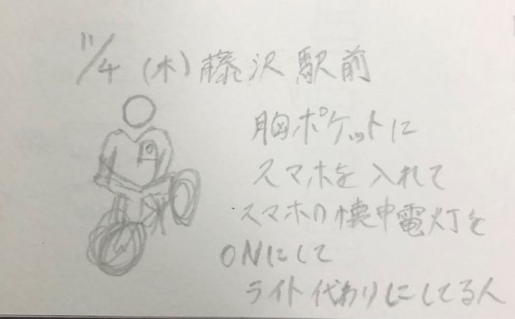

第四回 Design for Others1 プロトタイピング
ピックアップした事象
1:懐中電灯を点けた状態のスマートフォンをスーツのポケットに入れたまま、自転車を漕いで夜道を走る男性に注目した。（自転車にはライトがついていなかった）
2:横持用のスマホ画面を縦の状態で使っている。

POV

[109].png)
この人はライトがないことを忘れて自転車に乗ったためスマホで代用したのではないか。
↳ライトを忘れていてもスマホで代用ができ、普通のライトのような見た目のモノがあると良いのでは
HMV


構想スケッチ
試作品
網上のモノがうまく作れなかった。
もう少し懐中電灯のような見た目にしたかった。
設計ファイル
stlファイルこちらからダウンロード
デジタルファブリケーショントップページ